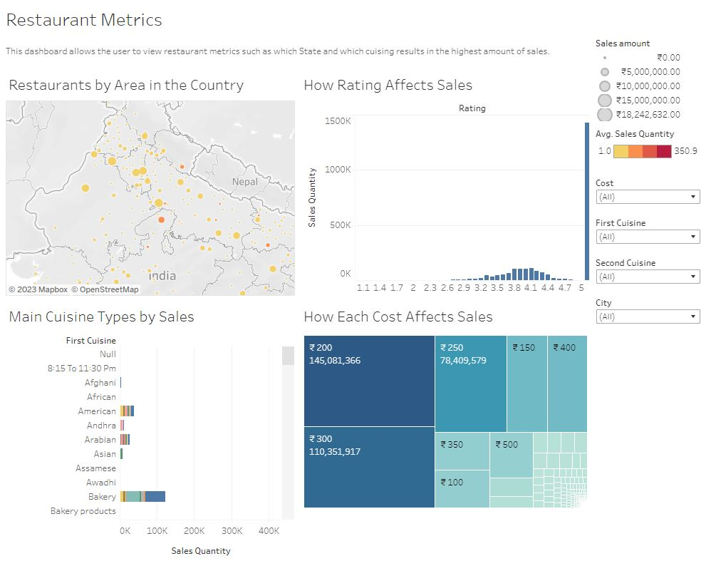

With a background in application engineering and a recent transition into sales, ,
I bring a unique blend of technical expertise and business acumen to the field of data analytics. ,
My passion lies in uncovering hidden patterns and trends within complex data, translating them into ,
actionable insights that drive informed decision-making and business growth.
The project task was to clean data using SQL. I performed various cleaning procedures such as splitting columns, deleting duplicates, and standardizing formating.
The project task was to create a dashboard for video game sales data. My goal was to specifically focus on how genre and platforms impact sales.
The project task was utilize SQL and Power BI to create a dashboard to display hotel revenue data as well as details on parking.

The project task was to clean and organize data, then create a dashboard to find the best potential restaurant. This was based on cuisine, location, ratings, and cost.
The project task was to clean data using google sheets, then create pivot tables and charts to find the retention rates as well as the conversion percentage.